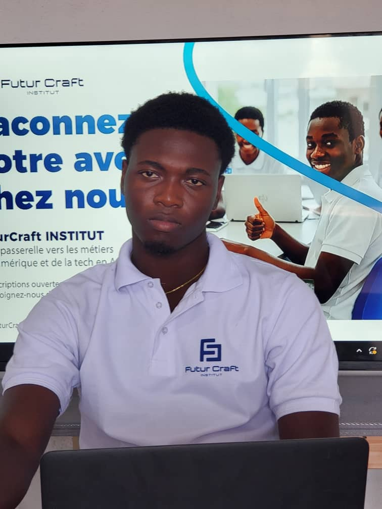

Je suis Loïc ASSOGBA, Développeur Web Full-Stack en formation à FuturCraft Institut.

Passionné par la création et les émotions vraies, j'ai conçu ce site pour célébrer l'amour sous toutes ses formes. Chaque détail, chaque couleur et chaque mot ont été pensés pour transmettre un message simple mais puissant : l'amour mérite d'être exprimé. En tant que développeur en formation, je mets mes compétences au service de vos sentiments afin de transformer vos idées en souvenirs uniques et inoubliables. Mon objectif est de créer des expériences digitales qui touchent le cœur, parce que derrière chaque écran, il y a une histoire, une émotion… et peut-être une belle déclaration qui commence ici ❤️.